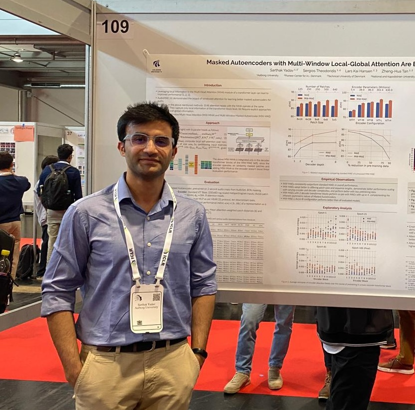

|
Sarthak Yadav
I am a PhD Fellow at the Department of Electronic Systems, Aalborg University and the Pioneer Center for Artificial Intelligence, Copenhagen.
My research focuses on developing and understanding self-supervised audio and speech representations, and I'm advised by Prof. Zheng-Hua Tan, Prof. Lars Kai Hansen and Prof. Sergios Theodoridis.
Previously, after completing my MSc(R) in Computing Science from the University of Glasgow, under the guidance of Prof. Mary Ellen Foster, I worked as a Research Intern with the Speech and Audio Processing Group at the IDIAP Research Institute under the supervision of Dr. Mathew Magimai Doss. I primarily worked on explanability of speech and biosignal based DNNs for emotion recognition.
I also have extensive industrial experience as the ex-Lead Research Engineer at Staqu Technologies, where I led the design and development of several large scale mission-critical intelligent systems, spanning computer vision (for eg. violence recognition,scalable object detection and multispectral geospatial imaging), biometrics (speaker and face) and language understanding (ASR and NMT).
Updates
[06/24] Latest paper on selective SSMs accepted at INTERSPEECH 2024
[01/24] First paper of my PhD accepted at ICLR 2024
[06/23] Awarded DeiC compute grant for access to the LUMI Supercomputer
[10/22] Started as PhD Fellow at ES-AAU/Pioneer Center for AI
[05/22] MSc @ University of Glasgow Done!
[04/22] Started as Research Intern at IDIAP Research Institute
Email |
CV |
Google Scholar |
LinkedIn |
GitHub |
Kaggle
|

|
|
|
Audio xLSTMs: Learning Self-Supervised Audio Representations with xLSTMs
Sarthak Yadav, Sergios Theodoridis and Zheng-Hua Tan
Under peer review
Abstract /
BibTex /
Code
While the transformer has emerged as the eminent neural architecture, several independent lines of research have emerged to address its limitations. Recurrent neural approaches have also observed a lot of renewed interest, including the extended long short-term memory (xLSTM) architecture, which reinvigorates the original LSTM architecture. However, while xLSTMs have shown competitive performance compared to the transformer, their viability for learning self-supervised general-purpose audio representations has not yet been evaluated. This work proposes Audio xLSTM (AxLSTM), an approach to learn audio representations from masked spectrogram patches in a self-supervised setting. Pretrained on the AudioSet dataset, the proposed AxLSTM models outperform comparable self-supervised audio spectrogram transformer (SSAST) baselines by up to 20% in relative performance across a set of ten diverse downstream tasks while having up to 45% fewer parameters.
@misc{yadav2024audioxlstmslearningselfsupervised,
title={Audio xLSTMs: Learning Self-supervised audio representations with xLSTMs},
author={Sarthak Yadav and Sergios Theodoridis and Zheng-Hua Tan},
year={2024},
eprint={2408.16568},
archivePrefix={arXiv},
primaryClass={cs.SD},
url={https://arxiv.org/abs/2408.16568},
}
|
|
|
Audio Mamba: Selective State Spaces for Self-Supervised Audio Representations
Sarthak Yadav and Zheng-Hua Tan
INTERSPEECH, 2024
Abstract /
BibTex /
Code
Despite its widespread adoption as the prominent neural architecture, the Transformer has spurred several independent lines of work to address its limitations. One such approach is selective state space models, which have demonstrated promising results for language modelling. However, their feasibility for learning self-supervised, general-purpose audio representations is yet to be investigated. This work proposes Audio Mamba, a selective state space model for learning general-purpose audio representations from randomly masked spectrogram patches through self-supervision. Empirical results on ten diverse audio recognition downstream tasks show that the proposed models, pretrained on the AudioSet dataset, consistently outperform comparable self-supervised audio spectrogram transformer (SSAST) baselines by a considerable margin and demonstrate better performance in dataset size, sequence length and model size comparisons.
@inproceedings{yadav24_interspeech,
title = {Audio Mamba: Selective State Spaces for Self-Supervised Audio Representations},
author = {Sarthak Yadav and Zheng-Hua Tan},
year = {2024},
booktitle = {Interspeech 2024},
pages = {552--556},
doi = {10.21437/Interspeech.2024-1274},
}
|
|
|
Masked Autoencoders with Multi-Window Local-Global Attention Are Better Audio Learners
Sarthak Yadav, Sergios Theodoridis, Lars Kai Hansen, and Zheng-Hua Tan
Twelfth International Conference on Learning Representations (ICLR), 2024
Abstract /
BibTex /
Code
In this work, we propose a Multi-Window Masked Autoencoder (MW-MAE) fitted with a novel Multi-Window Multi-Head Attention (MW-MHA) module that facilitates the modelling of local-global interactions in every decoder transformer block through attention heads of several distinct local and global windows. Empirical results on ten downstream audio tasks show that MW-MAEs consistently outperform standard MAEs in overall performance and learn better general-purpose audio representations, along with demonstrating considerably better scaling characteristics. Investigating attention distances and entropies reveals that MW-MAE encoders learn heads with broader local and global attention. Analyzing attention head feature representations through Projection Weighted Canonical Correlation Analysis (PWCCA) shows that attention heads with the same window sizes across the decoder layers of the MW-MAE learn correlated feature representations which enables each block to independently capture local and global information, leading to a decoupled decoder feature hierarchy.
@inproceedings{
yadav2024masked,
title={Masked Autoencoders with Multi-Window Local-Global Attention Are Better Audio Learners},
author={Sarthak Yadav and Sergios Theodoridis and Lars Kai Hansen and Zheng-Hua Tan},
booktitle={The Twelfth International Conference on Learning Representations},
year={2024},
url={https://openreview.net/forum?id=Q53QLftNkA}
}
|
|
|
Towards learning emotion information from short segments of speech
Tilak Purohit, Sarthak Yadav, Bogdan Vlasenko, S. Pavankumar Dubagunta, and Mathew Magimai Doss
IEEE International Conference on Acoustics, Speech, and Signal Processing (ICASSP), 2023
Abstract /
BibTex
Conventionally, speech emotion recognition has been approached by utterance or turn-level modelling of input signals, either through extracting hand-crafted low-level descriptors, bag-of-audio-words features or by feeding long-duration signals directly to deep neural networks (DNNs). While this approach has been successful, there is a growing interest in modeling speech emotion information at short segment level, at around 250ms-500ms (e.g. the 2021-22 MuSe Challenges). This paper investigates both hand-crafted feature-based and end-to-end raw waveform DNN approaches for modeling speech emotion information in such short segments. Through experimental studies on IEMOCAP corpus, we demonstrate that the end-to-end raw waveform modeling approach is more effective than using hand-crafted features for short segment level modelling. Furthermore, through relevance signal-based analysis of the trained neural networks, we observe that the top performing end-to-end approach tends to emphasize cepstral information instead of spectral information (such as flux and harmonicity).
@INPROCEEDINGS{10095892,
author={Purohit, Tilak and Yadav, Sarthak and Vlasenko, Bogdan and Dubagunta, S. Pavankumar and Magimai.-Doss, Mathew},
booktitle={ICASSP 2023 - 2023 IEEE International Conference on Acoustics, Speech and Signal Processing (ICASSP)},
title={Towards Learning Emotion Information from Short Segments of Speech},
year={2023},
volume={},
number={},
pages={1-5},
keywords={Deep learning;Emotion recognition;Cepstral analysis;Computational modeling;Neural networks;Anxiety disorders;Speech recognition;Speech Emotion Recognition;Convolution Neural Network;End-to-End modelling},
doi={10.1109/ICASSP49357.2023.10095892}
}
|
|
|
Comparing Biosignal and Acoustic feature Representation for Continuous Emotion Recognition
Sarthak Yadav, Tilak Purohit, Zohreh Mostaani, Bogdan Vlasenko and Mathew Magimai Doss
Proceedings of the 3rd International on Multimodal Sentiment Analysis Workshop and Challenge @ The 30th ACM International Conference on Multimedia, 2022
Abstract /
BibTex
Automatic recognition of human emotion has a wide range of applications. Human emotions can be identified across different modalities, such as biosignal, speech, text, and mimics. This paper is focusing on time-continuous prediction of level of valence and psycho-physiological arousal. In that regard, we investigate, (a) the use of different feature embeddings obtained from neural networks pre-trained on different speech tasks (e.g., phone classification, speech emotion recognition) and self-supervised neural networks, (b) estimation of arousal and valence from physiological signals in an end-to-end manner and (c) combining different neural embeddings. Our investigations on the MuSe-Stress sub-challenge shows that (a) the embeddings extracted from physiological signals using CNNs trained in an end-to-end manner improves over the baseline approach of modeling physiological signals, (b) neural embeddings obtained from phone classification neural network and speech emotion recognition neural network trained on auxiliary language data sets yield improvement over baseline systems purely trained on the target data, and (c) task-specific neural embeddings yield improved performance over self-supervised neural embeddings for both arousal and valence. Our best performing system on test-set surpass the DeepSpectrum baseline (combined score) by a relative 7.7% margin.
@inproceedings{10.1145/3551876.3554812,
author = {Yadav, Sarthak and Purohit, Tilak and Mostaani, Zohreh and Vlasenko, Bogdan and Magimai.-Doss, Mathew},
title = {Comparing Biosignal and Acoustic Feature Representation for Continuous Emotion Recognition},
year = {2022},
isbn = {9781450394840},
publisher = {Association for Computing Machinery},
address = {New York, NY, USA},
url = {https://doi.org/10.1145/3551876.3554812},
doi = {10.1145/3551876.3554812},
abstract = {Automatic recognition of human emotion has a wide range of applications. Human emotions can be identified across different modalities, such as biosignal, speech, text, and mimics. This paper is focusing on time-continuous prediction of level of valence and psycho-physiological arousal. In that regard, we investigate, (a) the use of different feature embeddings obtained from neural networks pre-trained on different speech tasks (e.g., phone classification, speech emotion recognition) and self-supervised neural networks, (b) estimation of arousal and valence from physiological signals in an end-to-end manner and (c) combining different neural embeddings. Our investigations on the MuSe-Stress sub-challenge shows that (a) the embeddings extracted from physiological signals using CNNs trained in an end-to-end manner improves over the baseline approach of modeling physiological signals, (b) neural embeddings obtained from phone classification neural network and speech emotion recognition neural network trained on auxiliary language data sets yield improvement over baseline systems purely trained on the target data, and (c) task-specific neural embeddings yield improved performance over self-supervised neural embeddings for both arousal and valence. Our best performing system on test-set surpass the DeepSpectrum baseline (combined score) by a relative 7.7\% margin},
booktitle = {Proceedings of the 3rd International on Multimodal Sentiment Analysis Workshop and Challenge},
pages = {37–45},
numpages = {9},
keywords = {modalities fusion, emotion recognition, self-supervised embedding, pre-trained embedding, breathing patterns},
location = {Lisboa, Portugal},
series = {MuSe' 22}
}
|
|
|
Learning neural audio features without supervision
Sarthak Yadav, Neil Zeghidour
INTERSPEECH 2022
Abstract /
BibTex
Deep audio classification, traditionally cast as training a deep neural network on top of mel-filterbanks in a supervised fashion, has recently benefited from two independent lines of work. The first one explores ``learnable frontends'', i.e., neural modules that produce a learnable time-frequency representation, to overcome limitations of fixed features. The second one uses self-supervised learning to leverage unprecedented scales of pre-training data. In this work, we study the feasibility of combining both approaches, i.e., pre-training learnable frontend jointly with the main architecture for downstream classification. First, we show that pretraining two previously proposed frontends (SincNet and LEAF) on Audioset drastically improves linear-probe performance over fixed mel-filterbanks, suggesting that learnable time-frequency representations can benefit self-supervised pre-training even more than supervised training. Surprisingly, randomly initialized learnable filterbanks outperform mel-scaled initialization in the self-supervised setting, a counter-intuitive result that questions the appropriateness of strong priors when designing learnable filters. Through exploratory analysis of the learned frontend components, we uncover crucial differences in properties of these frontends when used in a supervised and self-supervised setting, especially the affinity of self-supervised filters to diverge significantly from the mel-scale to model a broader range of frequencies.
@inproceedings{yadav22_interspeech,
author={Sarthak Yadav and Neil Zeghidour},
title={{Learning neural audio features without supervision}},
year=2022,
booktitle={Proc. Interspeech 2022},
pages={396--400},
doi={10.21437/Interspeech.2022-10834}
}
|
|
|
Frequency and Temporal Convolutional Attention for Text-Independent Speaker Recognition
Sarthak Yadav, Atul Rai
IEEE International Conference on Acoustics, Speech and Signal Processing (ICASSP), 2020
Abstract /
BibTex
Majority of the recent approaches for text-independent speaker recognition apply attention or similar techniques for aggregation of frame-level feature descriptors generated by a deep neural network (DNN) front-end. In this paper, we propose methods of convolutional attention for independently modelling temporal and frequency information in a convolutional neural network (CNN) based front-end. Our system utilizes convolutional block attention modules (CBAMs) [1] appropriately modified to accommodate spectrogram inputs. The proposed CNN front-end fitted with the proposed convolutional attention modules outperform the no-attention and spatial-CBAM baselines by a significant margin on the VoxCeleb [2], [3] speaker verification benchmark. Our best model achieves an equal error rate of 2.031% on the VoxCeleb1 test set, which is a considerable improvement over comparable state of the art results. For a more thorough assessment of the effects of frequency and temporal attention in real-world conditions, we conduct ablation experiments by randomly dropping frequency bins and temporal frames from the input spectrograms, concluding that instead of modelling either of the entities, simultaneously modelling temporal and frequency attention translates to better real-world performance.
@INPROCEEDINGS{9054440,
author={Yadav, Sarthak and Rai, Atul},
booktitle={ICASSP 2020 - 2020 IEEE International Conference on Acoustics, Speech and Signal Processing (ICASSP)},
title={Frequency and Temporal Convolutional Attention for Text-Independent Speaker Recognition},
year={2020},
volume={},
number={},
pages={6794-6798},
doi={10.1109/ICASSP40776.2020.9054440}}
|
|
|
Learning Discriminative Features for Speaker Identification and Verification
Sarthak Yadav, Atul Rai
INTERSPEECH, 2018
Abstract /
BibTex
The success of any Text Independent Speaker Identification and/or Verification system relies upon the system’s capability to learn discriminative features.
In this paper we propose a Convolutional Neural Network (CNN) Architecture based on the popular Very Deep VGG [1] CNNs, with key modifications to accommodate variable length spectrogram inputs, reduce the model disk space requirements and reduce the number of parameters, resulting in significant reduction in training times. We also propose a unified deep learning system for both Text-Independent Speaker Recognition and Speaker Verification, by training the proposed network architecture under the joint supervision of Softmax loss and Center loss [2] to obtain highly discriminative deep features that are suited for both Speaker Identification and Verification Tasks.
We use the recently released VoxCeleb dataset [3], which contains hundreds of thousands of real world utterances of over 1200 celebrities belonging to various ethnicities, for benchmarking our approach. Our best CNN model achieved a Top1 accuracy of 84.6%, a 4% absolute improvement over VoxCeleb’s approach, whereas training in conjunction with Center Loss improved the Top-1 accuracy to 89.5%, a 9% absolute improvement over Voxceleb’s approach.
@inproceedings{yadav2018learning,
title="Learning Discriminative Features for Speaker Identification and Verification.",
author="Sarthak {Yadav} and Atul {Rai}",
booktitle="Interspeech 2018",
pages="2237--2241",
year="2018"
}
|
|
|
Prediction of Ubiquitination Sites Using UbiNets
Sarthak Yadav,
Manoj Kumar Gupta,
Ankur Singh Bist
Advances in Fuzzy Systems, 2018
Abstract /
BibTex
Ubiquitination controls the activity of various proteins and belongs to posttranslational modification. Various machine learning techniques are taken for prediction of ubiquitination sites in protein sequences. The paper proposes a new MLP architecture, named UbiNets, which is based on Densely Connected Convolutional Neural Networks (DenseNet). Computational machine learning techniques, such as Random Forest Classifier, Gradient Boosting Machines, and Multilayer Perceptrons (MLP), are taken for analysis. The main target of this paper is to explore the significance of deep learning techniques for the prediction of ubiquitination sites in protein sequences. Furthermore, the results obtained show that the newly proposed model provides significant accuracy. Satisfactory experimental results show the efficiency of proposed method for the prediction of ubiquitination sites in protein sequences. Further, it has been recommended that this method can be used to sort out real time problems in concerned domain
@article{yadav2018prediction,
title={Prediction of ubiquitination sites using UbiNets},
author={Yadav, Sarthak and Gupta, Manoj and Bist, Ankur Singh},
journal={Advances in Fuzzy Systems},
volume={2018},
publisher={Hindawi}
}
|
Projects and open-source contributions
|
|
|
Community Contributor, SpeechBrain
As a community contributor, my PyTorch implementation of "LEAF: A Learnable Frontend for Audio Classification", by Zeghidour et al., 2021 was merged in SpeechBrain release v0.5.12.
Code /
Paper
|
|
|
Masked Autoencoders in Jax
Jax/Flax implementation of the paper "Masked Autoencoders Are Scalable Vision Learners", by He et al., 2021. Pre-trained models available soon!
Code /
Paper
|
|
|
audax: a home for audio ML in Jax
A home for audio ML in Jax. Has common features, popular learnable frontends (eg. SincNet, LEAF), and pretrained supervised and self-supervised (eg. COLA) models. As opposed to popular frameworks, the objective is not to become an end-to-end, end-all-be-all DL framework, but instead to act as a starting point for doing things the jax way, through reference implementations and recipes, using the Jax / Flax / Optax stack.
Code
|
|
|
Raw waveform modelling using the LEAF front-end
PyTorch implementation of the paper "LEAF: A Learnable Frontend for Audio Classification", by Zeghidour et al., 2021. Includes training support on GPU and a single TPU node using torch-xla. Pre-trained models on several datasets released.
Code /
Paper
|
|
|
Sound event recognition on FSD50K
PyTorch implementation of the paper "FSD50K: an Open Dataset of Human-Labeled Sound Events", by Fonseca et al., 2020.
Code /
Paper
|
|